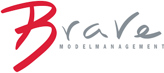

I am a dual master's degree student in Computer Science and Data Science & Engineering at the
 University of Illinois Chicago
and the
University of Illinois Chicago
and the
 Politecnico di Torino
.
I am currently enrolled with a 3.8 GPA at UIC and 110/110 final grade at Politecnico di Torino, where I also completed my bachelor's degree in Information Engineering.
My academic focus includes machine learning, statistics, big data systems, and large language models.
Politecnico di Torino
.
I am currently enrolled with a 3.8 GPA at UIC and 110/110 final grade at Politecnico di Torino, where I also completed my bachelor's degree in Information Engineering.
My academic focus includes machine learning, statistics, big data systems, and large language models.
I am currently an AI Research Intern at
 Pirouette Software Inc.
,
conducting research on hardware anomaly traces generated by large language models.
Previously, I worked as a Data Science Intern at
Pirouette Software Inc.
,
conducting research on hardware anomaly traces generated by large language models.
Previously, I worked as a Data Science Intern at
 MEC srl
, where I analyzed 500,000+ operational records, built automated ETL pipelines (Apache Airflow), and designed SQL-based dashboards for decision support.
In 2025, I served as a Teaching Assistant at
Politecnico di Torino
, mentoring 80+ students.
MEC srl
, where I analyzed 500,000+ operational records, built automated ETL pipelines (Apache Airflow), and designed SQL-based dashboards for decision support.
In 2025, I served as a Teaching Assistant at
Politecnico di Torino
, mentoring 80+ students.
My strengths are in mathematics, statistics, and experimental rigor.
I excel at problem framing, feature engineering, extracting signal from noisy data, and communicating insights clearly.
I work well in structured, accountable team environments and am comfortable taking ownership and leadership.
Outside of work, I played competitive football for 17 years in Italy as a goalkeeper, developing decisiveness and leadership under pressure.
I was also part of the wrestling team at
Gorham High School
.
Between 2020 and 2023, I worked as a professional model with
Brave Models (Milan, Italy)
, collaborating with brands including Armani, Herno, and Dolce & Gabbana.
More recently, I worked as a steward at
Juventus
.
I value integrity, curiosity, resilience, and teamwork, and I am motivated by work that is rigorous, responsible, and impactful.
 LLM Empathy Study
LLM Empathy Study
 Speaker Age Estimation
Speaker Age Estimation
 Reinforcement Learning
Reinforcement Learning
 Unsupervised Learning
Unsupervised Learning
 Soccer
Soccer